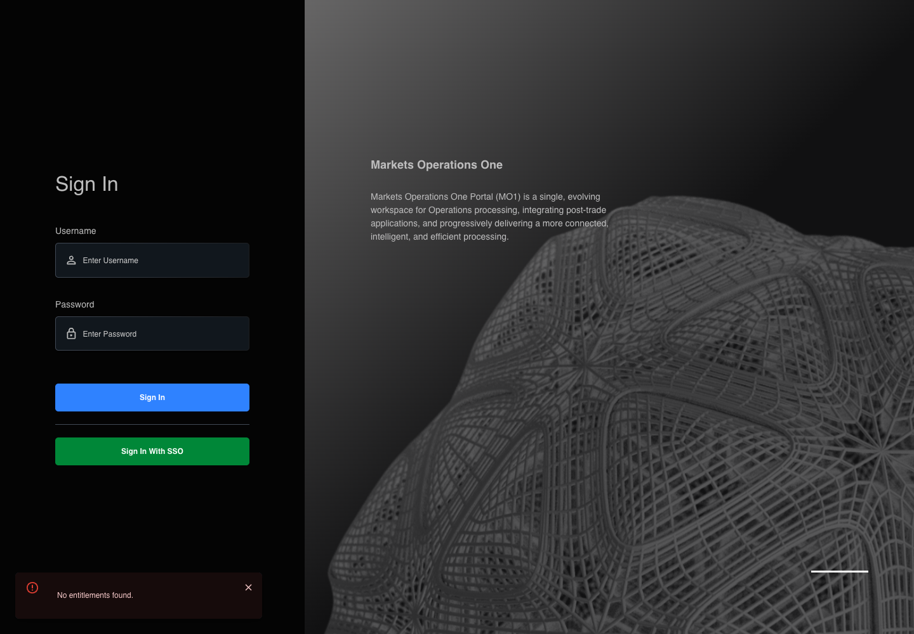

AUTH-036 rejected callback remains anonymous
PASS · application/run-050/auth-036-rejected-callback-remains-anonymous-d1e409847d7f-attempt-1 · ACTUAL_APPLICATION_LOCAL_SERVICES
Actual React; controlled callback/login responses; unsigned browser-only credentials; empty seeded WS-A. Provider acceptance and BFF fallback are not verified.
2026-10-22T06:07:33.992Z to 2026-10-22T06:07:39.735Z
Assertions and result · Artifact manifest · Exact run inputs and source hashes
Result SHA-256:7f04683cb37c25784c05673e61b01c200e9f61a1e7032493a1afeb2582283d4fScreenshot capture: CAPTURED. Named frames: 9.
Step screenshot bindings: COMPLETE. 8/8 canonical steps have execution screenshots.
Bindings measure structural coverage only. They do not establish screenshot content quality or relevance.
Screenshot content review: NOT_REVIEWED. Recorded context: 0/9 frames. Identical image bytes: 6 repeated frames. Recorded context does not establish human visual review.
Canonical step timeline
Given User A is an entitled fixture user in an isolated browser context with empty browser storage
Execution: PASSED.
1. step-01 Visible state after step 1: Given User A is an entitled fixture user in an isolated browser context with empty browser storage
2026-10-22T06:07:35.968Z · 1440×1000
Step: /Users/lushevol/code/github/ratan-release-impact/workbench/tasks/ui-test-coverage-20261022/test-cases.md:1426
SHA-256:664babd84ff6d7926ad8e99d7a4bbde727c1a202e01dd31a587c9d3836eefb38And callback login returns entity ENTITY-X; every supplied drawer requires ENTITY-A
Execution: PASSED.
2. step-02 Visible state after step 2: And callback login returns entity ENTITY-X; every supplied drawer requires ENTITY-A
2026-10-22T06:07:37.272Z · 1440×1000
Step: /Users/lushevol/code/github/ratan-release-impact/workbench/tasks/ui-test-coverage-20261022/test-cases.md:1427
SHA-256:56967d6bda88186c347cde3a8f5cf32d57e126d78944a71d97face7729f1ab1fWhen the Home entitlement validation completes
Execution: PASSED.
3. step-03 Visible state after step 3: When the Home entitlement validation completes
2026-10-22T06:07:37.601Z · 1440×1000
Step: /Users/lushevol/code/github/ratan-release-impact/workbench/tasks/ui-test-coverage-20261022/test-cases.md:1428
SHA-256:1288ae3e680f8787c5049d88f32218994649d7394857195698725567af30065dThen the textbox with placeholder "Enter Username" on the login page is visible
Execution: PASSED.
4. step-04 Visible state after step 4: Then the textbox with placeholder "Enter Username" on the login page is visible
2026-10-22T06:07:37.796Z · 1440×1000
Step: /Users/lushevol/code/github/ratan-release-impact/workbench/tasks/ui-test-coverage-20261022/test-cases.md:1429
SHA-256:1288ae3e680f8787c5049d88f32218994649d7394857195698725567af30065dImage bytes match frame 3. An unchanged image can be valid for consecutive assertions. This match does not establish correct step content.
And the text input with placeholder "Enter Password" on the login page is visible
Execution: PASSED.
5. step-05 Visible state after step 5: And the text input with placeholder "Enter Password" on the login page is visible
2026-10-22T06:07:37.989Z · 1440×1000
Step: /Users/lushevol/code/github/ratan-release-impact/workbench/tasks/ui-test-coverage-20261022/test-cases.md:1430
SHA-256:1288ae3e680f8787c5049d88f32218994649d7394857195698725567af30065dImage bytes match frame 4. An unchanged image can be valid for consecutive assertions. This match does not establish correct step content.
And the button labelled "Sign In" on the login page is visible
Execution: PASSED.
6. step-06 Visible state after step 6: And the button labelled "Sign In" on the login page is visible
2026-10-22T06:07:38.206Z · 1440×1000
Step: /Users/lushevol/code/github/ratan-release-impact/workbench/tasks/ui-test-coverage-20261022/test-cases.md:1431
SHA-256:1288ae3e680f8787c5049d88f32218994649d7394857195698725567af30065dImage bytes match frame 5. An unchanged image can be valid for consecutive assertions. This match does not establish correct step content.
And the tablist named "workspaces" on the Home page is absent
Execution: PASSED.
7. step-07 Visible state after step 7: And the tablist named "workspaces" on the Home page is absent
2026-10-22T06:07:38.439Z · 1440×1000
Step: /Users/lushevol/code/github/ratan-release-impact/workbench/tasks/ui-test-coverage-20261022/test-cases.md:1432
SHA-256:1288ae3e680f8787c5049d88f32218994649d7394857195698725567af30065dImage bytes match frame 6. An unchanged image can be valid for consecutive assertions. This match does not establish correct step content.
And the alert in the portal notification area displays exactly "No entitlements found."
Execution: PASSED.
8. step-08 Visible state after step 8: And the alert in the portal notification area displays exactly "No entitlements found."
2026-10-22T06:07:38.693Z · 1440×1000
Step: /Users/lushevol/code/github/ratan-release-impact/workbench/tasks/ui-test-coverage-20261022/test-cases.md:1433
SHA-256:1288ae3e680f8787c5049d88f32218994649d7394857195698725567af30065dImage bytes match frame 7. An unchanged image can be valid for consecutive assertions. This match does not establish correct step content.
Additional named frames

The final visible state after the named test assertions.
2026-10-22T06:07:39.190Z · 1440×1000Step: Test source: /Users/lushevol/code/github/ratan-release-impact/workbench/e2e/audit-specs/callback-profile.spec.ts:63
SHA-256:
1288ae3e680f8787c5049d88f32218994649d7394857195698725567af30065dImage bytes match frame 8. An unchanged image can be valid for consecutive assertions. This match does not establish correct step content.
Screenshots establish visible state only. Assertions and traces support functional claims.